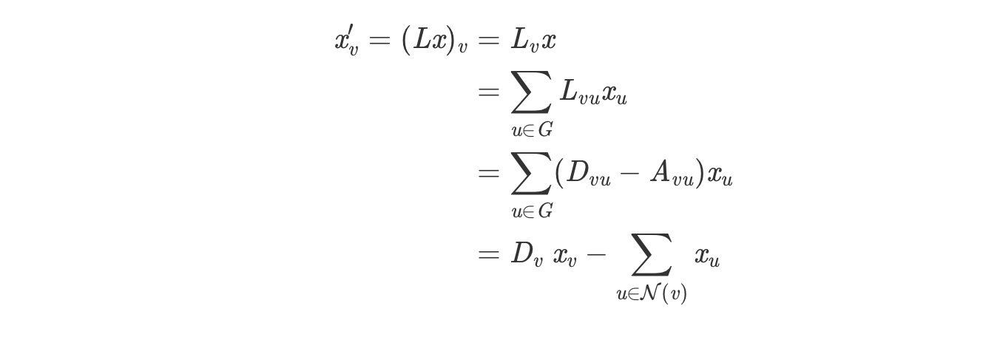
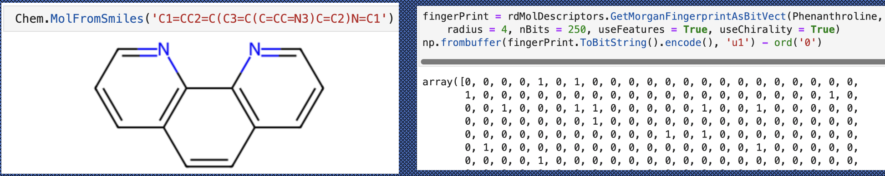
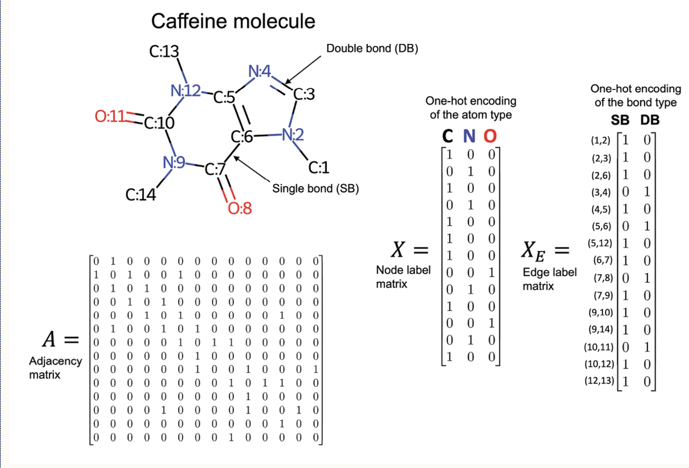
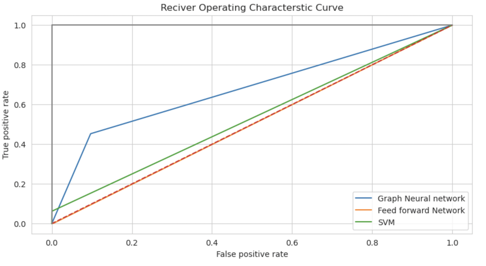
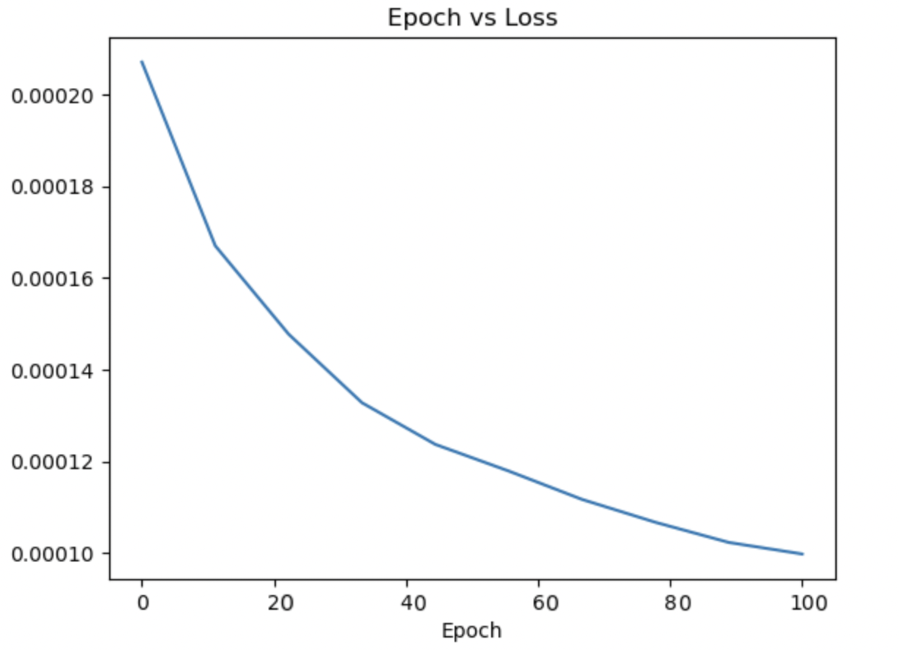
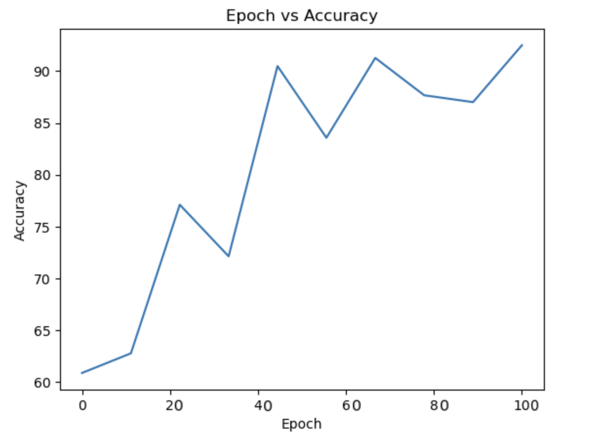
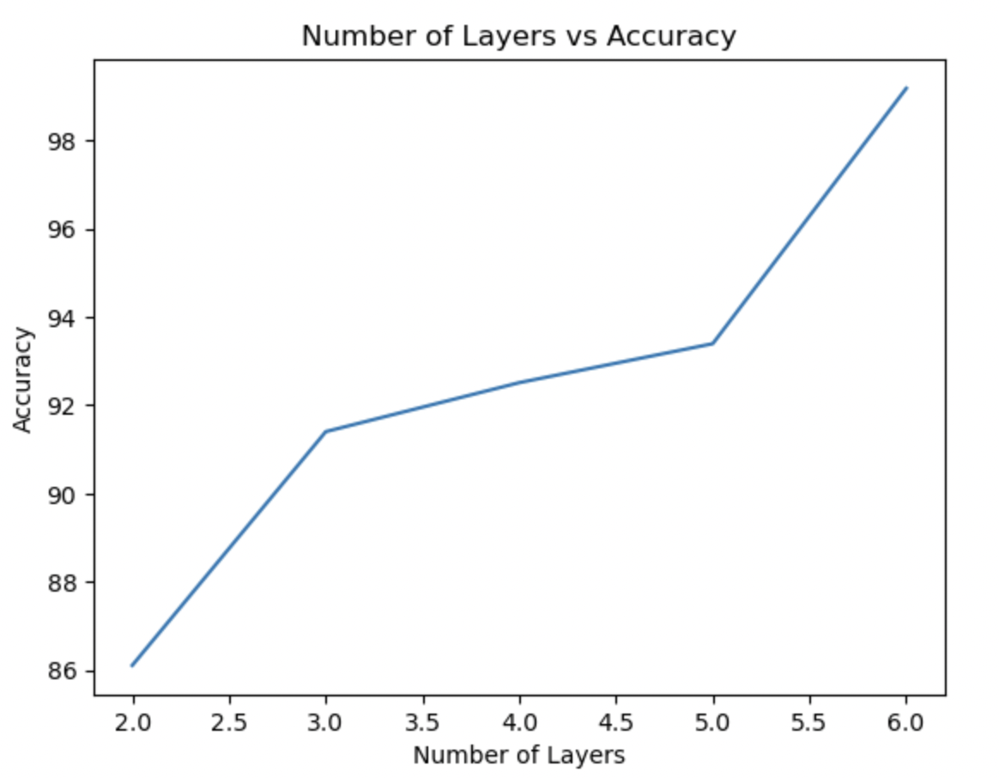
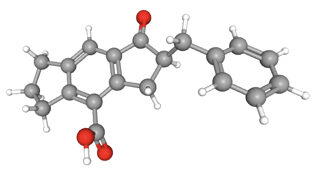
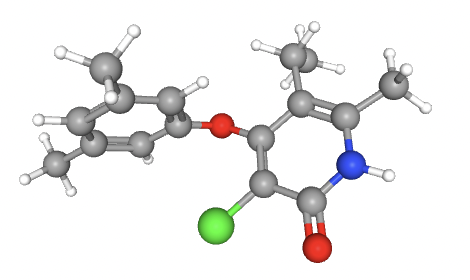

Proposal and Milestone
Final Report
Can Graph Convolutions Improve Drug Discovery for Alzheimer's Disease?
Introduction
The use of neural networks to predict novel treatments of disease is
widespread, and includes many areas of medicine and disease.
Alzheimer's Disease is a well known disease that impacts the lives of many people. The
amyloid peptides play a large role in the pathogenesis of the
disease,largely related to their dysfunction [2]. Although
the Disease impacts such a large population,
little is known about the underlying biological mechanism as a
whole, and thus treatments are limited.
In 2020, Collins and colleagues [1]
were able to utilize graph convolutions to produce trainable
molecular features for use in their neural networks.
These trainable features were then fed into a feed-forward neural
network to predict the binary outcome; if the compund
would act as an antibiotic towards E. coli. This new utilization of
graph neural networks to train molecular features led to
the discovery of a novel antibiotic, one that was structurally
unique to other antibiotics. The proposed project for this course
involves the reproduction and alteration of Collins work with
antibiotics to predict novel compounds which may be effective in the treatment of
Alzheimer's Disease, via interaction with the amyloid peptide.
Background
We decided to work with graphs becuase molecular structure resembles a graph such that the atoms are represented by nodes and bonds are represented by edges. The features of a atoms like atom type, and bond type are represented in a matrix format. The matrices are stored as node embedding. The drug discovery process requires finding similarity in the structure of the molecule. This is accomplished by message passing functionality. Each node embedding is multiplied by its neighbor node embedding. The number of neighbors a node can gather knowledge is defined in the filters similar to image convolution layers and hence the name graph convolution layers. The functionality of filter multiplication is described in below figure.
The matrix in the right represent the laplacian of the adjacency matrix. It can be used to create polynomials of the form:
Above polynomial is similar to filter's in CNN's.
We can make the polynomial of degree 1 and see how the nodes combines it's node embedding with its neighbors as shown below. Increasing the degree will increase the length of edges covered by a node.

The update of node embedding after each iteration is described below.
As shown in the right figure, h represents the node embedding. It is updated k times which is the number of hidden layers. At each layers, the laplacian polynomials representing the weights of the filters is multiplied with the hidden feature representation to update the node embedding g. A sigmoid functions is then applied to each node embedding to get non-linearity. The final output from graph neural network is flatten and passed through a feed forward network for classification.
Method
Data Collection
Compound and training data was collected from the PubChem Online
Database. PubChem comtains chemical information
for more than 9 billion compounds and the results of thousands of
experiments performed in labs across the world. For
this analysis, we used experimental data from PubChem Bioassay 1285
(INSERT LINK). This assay evaluated 193,771 compounds
in their ability to inhibit levels of Amyloid Precursor Protein (APP).
Of these 193,771 compounds, we were able to use the
PubChem compound database to extract relevant chemical information
(SMILES) for each of the compounds.
For the nomination data, chemical information for 10,000 compounds
were downloaded from the ChembL database,
another well known chemical library. The purpose of the nomination set
is to nominate new compounds that have yet to be
tested in a lab for their ability to reduce levels of the protein. For
this reason the 10,000 compounds chosen were
confirmed to not exist in the 193,771 compounds included in the
training data.
Data Preparation
DeepChem is a Python library/framework that is often used in the
Deep Learning and Chemistry fields.
The framework has integrated many deep learning models and
functionalities from both PyTorch and TensorFlow.
Following the extraction of standard chemical data from PubChem,
graph representations of the molecules were
needed to pass into our Graph Neural Network models. DeepChem
provides a function, ConvMolFeaturizer()
which easily converts approriately formatted graph representations
by passing in SMILES representations of each
compound into the function.
Due to the nature of drug discovery, the large majority of compounds
evaluated for activity on proteins
do not show any activity or impact on levels of the protein. This
leads to a highly imbalanced dataset.
In order to account for this, prior to training our models we used
the DeepChem function BalancingTransformer()
to minimize the impact of class imbalance on classification tasks.
The BalancingTransformer function
accomplishes this by balancing the class weights of both classes, to
ensure similar impact on model training from
both classes.
The data was split into training, validation, and test sets in a
80:10:10 ratio. Only 0.89% of tested compounds
showed activity against the Amyloid Precursor Protein, thus we split
the data using the RandomStratifiedSplitter()
function within DeepChem. This ensured the training, validation, and
test set had equally proportional data in terms of
class balance.
Data preparation for Support Vector Machine and Feed Forward Network
Simple feed forward network requires input in the format of a matrix. So we have used API from RDKIT library. It takes as input a SMILES string and provides an object of molecular structure. The object is transformed into vector format by method rdMolDescriptors.GetMorganFingerprintAsBitVect of rdkit library. This ouptut is called morgan fingerprint.
Contrary to this, graph neural network works with one hot encoding matrices of atom type, bond type and features like chirality, electrical charge of molecules. An example of a node object is Data(x=[25, 79], edge_index=[2, 54], edge_attr=[54, 10], y=[1]). Here x is the node index, edge index and edge attribute are edge index, and y is 1, if the compound can inhibit the progress of protein. Below figure represents molecular object, its finger print representation, adjacency matrix and feature matrices.


Model Training
The GraphConvModel provided by DeepChem was used as the baseline Graph Neural Network model for our analyses. From this model we tuned the parameters to determine which architecture provided the best performance on our validation set. The architecture of the final model included:- Four graph convolutional layers
- One feed-forward fully connected layer
- Dropout (p = 0.5)
- Batch Normalization
- Softmax Function
- ADAM optimizer
- Learning Rate 0.001
- 50 epochs
- Cross-Entropy Loss Function
Support Vector Machine Model
The SVC is initialized as below by using scikit-library model:- SVC(kernel='rbf', class_weight='balanced', # penalize probability=True, C = 10)
Feed forward Network Model
- Two Feed forward network of size 1024 and 256
- Each feed forward Network is followed by dropout of 0.2
- ADAM optimizer
- Learning Rate 0.0001
- 100 epochs
- Cross-Entropy Loss Function
Custom Graph Neural network
- Five different variations with number of graph neural network layers = 2, 3, 4,5 and 6
- Above GNN is followed by a feed forward network of size 16 and 32 and a sigmoid function
- ADAM optimizer
- Learning Rate 0.0001
- 100 epochs
- Cross-Entropy Loss Function
Results
As mentioned in data preparation, we have created model of Support Vector Machines, Simple Feed Forward Network, Custom Graph Neural Network and imported Graph Neural Network from Deep chem Library. We have summarized the results in the confusion matrix below:
Support Vector Machines
| Predicted InActive | Predicted Active | |
|---|---|---|
| True Inactive | 7682 | 3 |
| True Active | 60 | 4 |
Feed Forward Network
| Predicted InActive | Predicted Active | |
|---|---|---|
| True Inactive | 38312 | 113 |
| True Active | 316 | 6 |
Custom Graph Neural Network
| Predicted InActive | Predicted Active | |
|---|---|---|
| True Inactive | 17350 | 1863 |
| True Active | 87 | 72 |
Below are some of the graphs for loss and accuracy compared to epochs for Custom Graph neural network
Fig 1: ROC curve

Fig 2: Epoch Vs Loss for Custom GNN

Fig 3: Epoch Vs Validation Accuracy for Custom GNN

TBD Fig 4: Number of GNN layers Vs Accuracy for Custom GNN
Graph Neural Network Model Results
CHEMBL1981307
CHEMBL224682

CHEMBL234282
Next Steps
- Model building : The current model implemented in our project is the out-of-the-box model provided by DeepChem. We would like to use our current results to build off of this model and create custom layers and parameters.
- Experiment and performance comparison(In progress): We will use support vector machine as an alternative model. It takes Morgan fingerprint as an input \ and performs classification. We will then do comparison of the performance of neural network model and SVM. If time permits we will try to build random forest model and compare its performance with feed-forward neural network model
GitHub Link
References
Team Members
Afsar Equebal and Hendrik Ombach.